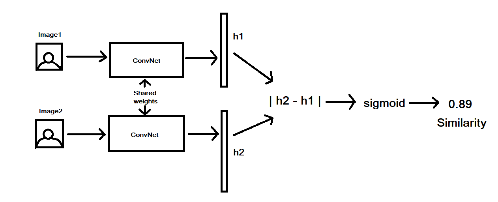
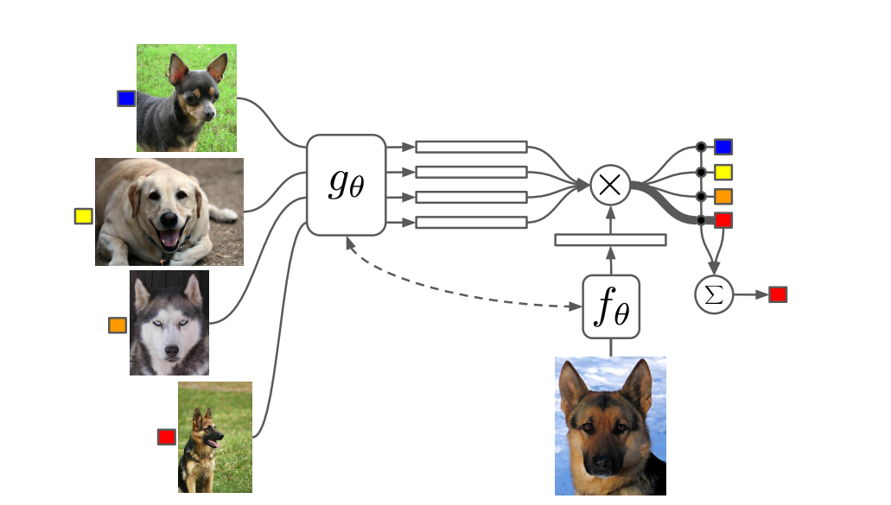
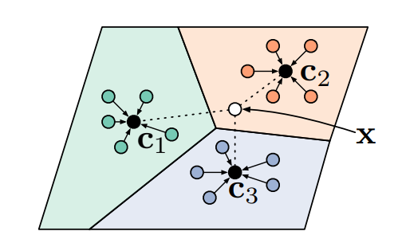

§ Meta: Non-Parametric Methods
The optimization-based methods are very useful for model-agnosticism and expression with sufficiently deep networks. However, as we have seen the main bottleneck is the second-order optimization which ends up being compute and memory intensive. Thus, the natural question is whether we can embed a learning procedure without the second-order optimization? one answer to this lies in the regime of data when it comes to the test time → during the meta-test time our paradigm of few-shot learning is a low data regime. Thus, methods that are non-parametric and have been shown to work well in these cases can be applied here! Specifically,
- We want to be parametric during hte trainng phase
- We can apply a non-parametric way to compare classes during test time
Thus, the question now becomes → Can we use parametric Learners to produce effective non-parametric learners? The straight answer to this would be something like K-Nearest Neighbors where we take a test sample and compare it against our training classes to see which one I the closest. However, now we have the issue of the notion of closeness! In the supervised case, we could simply use a L2-Norm, but this might not be the case for meta-learning strategies since direct comparison of low-level features might fail to take into account meta-information that might be relevant. Hence, we look to other approaches
§ Siamese Networks
A siamese network is an architecture which was multiple sub-networks with identical configuration i.e same weights and hyperparameters. We train this architecture to output the similarity between two inputs using the feature vectors.

In our case, we can train these networks to predict whether or not two images belong to the same class or not and thus, we have a black box similarity between our test data and our training classes. We can use this during the test to compare the input with all classes in our training set and output the class with the highest similarity.
§ Matching Networks
The issue with the siamese network approach is that we are training the network on Binary classification but testing it on Multi-Class classification.
Matching Networks circumvent this problem by training the networks in such a way that the Nearest-Neighbors method produces good results in the learned embedding space.

To do this, we learn an embedding space
g(θ) for all input classes and also create an embedding space
h(θ) for the test data. We then compare the
g(.) and
f(.) to predict each image class, which is then summed to create a test prediction. Each of the black dots in the above image corresponds to the comparison between training and test images, and our final prediction is the weighted sum of these individual labels
y^ts=xk,yk∈Dtr∑fθ(xts,xk)yk
This paper used a bi-directional LSTM to produce
gθ and a convolutional encoder to embed the images in
hθ and the model was trained end-end, with the training and test doing the same thing. The general algorithm for this is as follows:
- Sample Task Ti ( a sequential stream or mini-batches )
- Sample Disjoint Datasets Ditr,Ditest from Di
- Compute y^ts=∑xk,yk∈Dtrfθ(xts,xk)yk
- Update θ using ∇θL(y^ts,yts)
§ Prototypical Networks
While Matching networks work well for one-shot meta-learning tasks, they do all this for only one class. If we had a problem of more than one shot prediction, then the matching network will do the same process for each class, and this might not be the most efficient method for this.
Prototypical Networks alleviate this issue by aggregating class information to create a prototypical embedding → If we assume that for each class there exists an embedding in which points cluster around a single prototype representation, then we can train a classifier on this prototypical embedding space. This is achieved through learning a non-linear map from the input into an embedding space using a neural network and then taking a class’s prototype to be the mean of its support set in the embedding space.

As shown in the figure above, the classes become seperable in this embedding space.
ck=∣Ditr∣1(x,y)∈Ditr∑fθ(x)
Now, if we have a metric on this space then all we have to do is find the near class cluster to a new query point and we can classify that point as belonging to this class by taking the softmax over the distances
pθ(y=k∣x)=∑k′exp(−d(fθ(x),ck′))exp(−d(fθ(x),ck))
If we want to reason more complex stuff about our data then we just need to create a good enough representation in the embedding space. Some approaches to do this are:
- Relation Network → This is an approach where they learn the relationship between embeddings i.e instead of taking d(.) as a pre-determined distance measure, they learn it inherently for the data
- Infinite Mixture Prototypes → Instead of defining each class by a single cluster. they represent each class by a set of clusters. Thus, by inferring this number of clusters they are able to interpolate between nearest neighbors and the prototypical representations.
- Graph Neural Networks → They extend the Matching network perspective to view the few-shot problem as the propagation of label information from labeled samples towards the unlabeled query image, which is then formalized as a posterior inference over a graphical model.
§ Comparing Meta-Learning Methods
§ Computation Graph Perspective
We can view these meta-learnin algorithms as computation graphs:
- Black-box adaptation is essentially a sequence of inputs and outputs on a computational graph
- Optimization can be seen as a embedding an optimization routine into a computational graph
- Non-parameteric methods can be seen as computational graphs working with the embedding spaces
This viewpoint allows us to see how to mix-match these approaches to improve performance:
- CAML → Ths approach creates an embedding space, which is also a metric space, to capture inter-class dependencies. once this is done, they run gradient descent using this metric
- Latent Embedding Optimization (LEO) → They learn a data-dependent latent generative representation of model parameters and then perform gradient-based meta-learning on this space. Thus, this approach decouples the need for GD on higher dimensional space by exploiting the topology of the data.
§ Algorithmic Properties Perspective
We consider the following properties of the most importance for most tasks :
- Expressive Power → Ability of our learned function f to represent a range of learning procedures. This is important for scalability and applicability to a range of domains.
- Consistency → The learned learning procedure will asymptotically solve the task given enough data, regardless of the meta-training procedure. The main idea is to reduce the reliance on the meta-training and generate the ability to perform on Out-Of-Distribution (OOD) tasks
- Uncertainty Awareness → Ability to reason about ambiguity during hte learning process. This is especially important for things like active learning, calibrated uncertainty, and RL.
We can now say the following about the three approaches:
- Black-Box Adaptation → Complete Expressive Power, but not consistent
- Optimization Approaches → Consistent and expressive for sufficiently deep models, but fail in expressiveness for other kinds of tasks, especially in Meta-Reinforcement Learning.
- Non-parametric Approaches → Expressive for most architectures and consistent under certain conditions